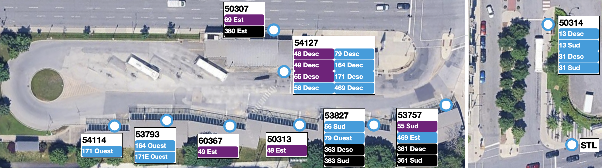

Modification d'assignation des quais au Terminus Henri-Bourassa pour y intégrer
la ligne 13 en tout temps
Ici, je propose des modifications à l'assignation des quais au terminus Henri-Bourassa
pour pouvoir y intégrer la ligne 13 en tout temps. Durant la journée, la ligne 13 reprend
le terminus actuel de la ligne 146 à l'intersection de Georges-Baril et d'Henri-Bourassa
(54093). Il ne s'agit pas d'une situation optimale: la ligne bénéficierait certainement d'un
terminus en tout temps à proximité du métro Henri-Bourassa.
D'abord, la réduction de fréquence de la ligne 171 ainsi que le retrait de la ligne 30
devrait libérer de l'espace dans la boucle de bus. À cet effet, considérant également que
la ligne 55 n'a pas un profil typique d'achalandage (l'achalandage hors pointe est aussi
important qu'en pointe), la ligne 55 devrait être capable d'utiliser la boucle de bus.
Ensuite, les lignes 13 et 31 pourront partager l'arrêt Millen / Henri-Bourassa. Il n'est
pas essentiel pour la ligne 31 d'utiliser la boucle, puisqu'elle est un service
complémentaire au métro.
Voici l'assignation proposée des quais :
- Quai 1 (53757) :
31 Sud [Service supprimé à cet arrêt]- 55 Sud [Service ajouté à cet arrêt]
- 361 Descente [Service maintenu à cet arrêt]
- 361 Sud [Service maintenu à cet arrêt]
- 469 Est [Service maintenu à cet arrêt]
- Quai 2 (53827) :
13 Sud (en soirée) [Service supprimé à cet arrêt]- 56 Sud [Service maintenu à cet arrêt]
- 79 Ouest [Service maintenu à cet arrêt]
- 363 Descente [Service maintenu à cet arrêt]
- 363 Sud [Service maintenu à cet arrêt]
- Quai 3 (50313) :
- 48 Est [Service maintenu à cet arrêt]
- Quai 4 (60367) :
- 49 Est [Service maintenu à cet arrêt]
- STL service de nuit
- Quai 5 (53793) :
- 164 Ouest [Service maintenu à cet arrêt]
- 171E Ouest [Service maintenu à cet arrêt]
- Quai 6 (54114) :
- 171 Ouest [Service maintenu à cet arrêt]
- Quai de descente (54127) :
13 • 31 Descente [Services supprimés à cet arrêt]- 48 • 49 • 56 • 79 • 164 • 171 • 469 Descente [Services maintenus à cet arrêt]
- 55 Descente [Service ajouté à cet arrêt]
- Millen / Henri-Bourassa (50314) :
- 13 Descente [Service ajouté à cet arrêt]
- 13 Sud [Service ajouté à cet arrêt]
- 31 Descente [Service ajouté à cet arrêt]
- 31 Sud [Service maintenu à cet arrêt]
55 Descente • 55 Sud [Service supprimé à cet arrêt]
Le schéma ci-dessous illustre l'assignation proposée :
